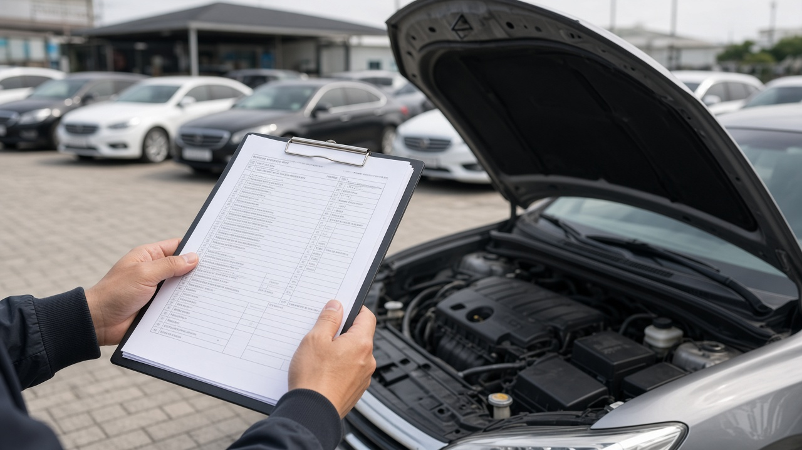
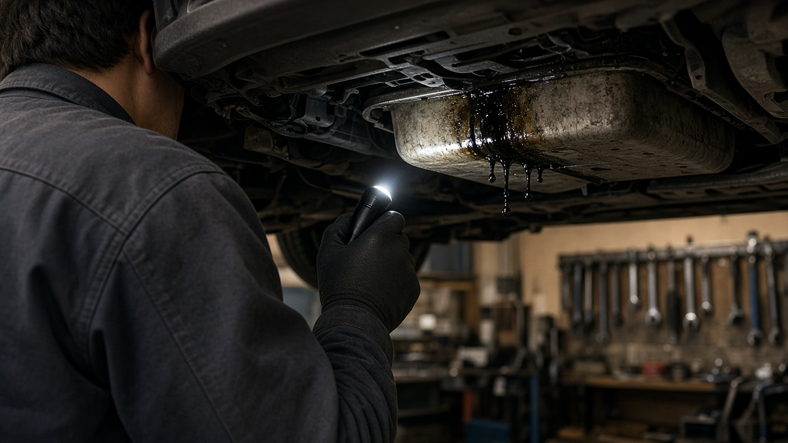
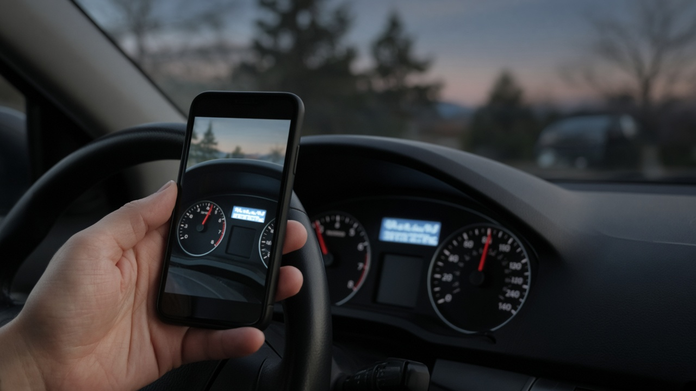

중고차 산 지 30일 2천km 안에 고장 나면 성능점검 책임보험, 아무 정비소에서 먼저 고치면 못 받는 이유

매매상사에서 중고차를 사고 몇 주 지나지 않아 엔진 쪽에서 기름이 새거나 변속기가 말썽을 부리면 머릿속이 하얘지죠. 계약할 때 받은 성능점검기록부에는 이상 없다고 적혀 있었는데 수리비는 누가 내야 하는지, 일단 집 근처 정비소에 맡겨도 되는지 헷갈리는 분이 많아요. 이럴 때 쓰는 게 자동차 성능상태점검 책임보험이에요. 다만 기간과 대상, 고치는 순서를 모르고 움직이면 받을 수 있는 보상을 놓치기 쉬워요. 오늘은 국토교통부 자동차365의 자주 묻는 질문과 자동차관리법 시행규칙, 보험연구원 자료를 바탕으로 핵심만 정리해 볼게요.
성능점검기록부와 실제 상태가 다를 때 수리비를 주는 의무보험이에요
중고차를 매매업자에게서 사면 계약 전에 성능상태점검기록부를 받게 되어 있어요. 이 기록부를 발행한 점검 업체는 법에 따라 점검 내용을 보증해야 하고, 그 책임을 대신 지는 보험에 의무로 가입해요. 이 제도가 2019년 6월부터 시행된 성능상태점검 책임보험이에요.
중요한 건 이 보험이 고장 난 곳을 전부 고쳐 주는 보험이 아니라는 점이에요. 기록부에 적힌 내용과 실제 차 상태가 달라서 점검 오류로 판명된 경우에만 보상해요. 예를 들어 기록부에 누유 없음으로 적혀 있었는데 산 지 얼마 안 돼서 엔진오일이 새는 게 확인되면 대상이 될 수 있지만, 기록부에 이미 누유로 표시된 부위 때문에 생긴 고장은 보상하지 않아요.
보험료는 점검 업체가 내지만, 그 비용이 결국 차 값에 반영되는 구조라서 사실상 소비자가 낸 돈으로 드는 보험이라고 보시면 돼요. 그러니 해당되면 당당하게 청구하시면 됩니다.

보상 기간은 인도일부터 30일 또는 2천km, 먼저 닿는 쪽까지예요
자동차관리법 시행규칙은 보증 범위를 차를 넘겨받은 날부터 30일 이상 또는 주행거리 2천km 이상으로 하도록 정하고 있어요. 실제로는 두 조건 중 먼저 도착하는 시점에 끝나는 경우가 많아서, 장거리 출퇴근을 하신다면 30일이 되기 전에 2천km를 넘길 수 있어요. 차를 받은 날 계기판 주행거리를 사진으로 남겨 두시면 나중에 따질 때 도움이 돼요.
성능점검기록부 자체에도 유효기간이 있어요. 발급일로부터 120일 안에 매매계약이 이뤄진 경우에만 보상이 가능하니, 계약할 때 기록부 발급일을 꼭 확인해 보세요. 보상 한도는 보험개발원 차량기준가액표의 금액과 1억 원 중 낮은 금액이에요.
기록부와 다른 점이 엔진 같은 장치가 아니라 이력인 경우도 있어요. 렌트나 영업용으로 쓰인 이력을 다르게 적었거나 차대번호를 다르게 적은 경우에는 차량기준가액의 9퍼센트를 보상하는데, 국산차는 100만 원, 외산차는 200만 원까지예요.
개인 간 거래와 당사자 거래이전은 보상 대상이 아니에요
이 보험은 매매업자를 통한 거래에만 적용돼요. 지인이나 중고 거래 앱으로 개인끼리 사고판 차는 가입 대상이 아니라서 보상이 안 돼요. 여기서 많이 놓치는 부분이 있어요. 딜러가 알선해 줬더라도 자동차등록원부에 당사자 거래이전으로 적혀 있으면 대상이 아니고, 매매업자 거래이전으로 등록된 경우만 보상을 받을 수 있어요.
침수와 전손 이력도 따로 봐야 해요. 침수로 전손 처리된 차는 유통 자체가 막혀 있어 가입 대상이 아니고, 일부만 침수된 차는 침수로 수리된 부품만 빼고 다른 원인의 고장은 보상받을 수 있어요. 등록이 넘어오기 전에 생긴 고장은 원칙적으로 이전등록이 끝난 뒤에 보상하지만, 계약을 마치고 차를 넘겨받았다면 이전등록증을 내는 조건으로 보상해 줘요.

견인비와 렌트비, 썬루프와 공조 부품은 빠져요
보상 범위는 국토교통부가 고시한 보증 범위 안의 부품이에요. 그 안에 들어가는 부품이라도 소모품이거나 일반적인 검사로 점검할 수 없는 부품은 원칙적으로 빠져요. 자동차365가 예로 든 비보증 부품을 보면 썬루프, 전동시트 모터, 타이어 공기압 센서, 레이더 센서, 헤드업디스플레이, 오디오와 내비게이션 같은 실내 장치, 하이브리드 관련 부품이 있고, 공조장치 중에서는 에어컨 컴프레서와 히터코어 등이 들어 있어요.
고장 때문에 생긴 견인비, 렌트비, 일을 못 해서 생긴 손해 같은 간접 비용도 보상하지 않아요. 기능에 문제가 없는 소음, 진동, 냄새, 변속 충격 정도도 대상이 아니고요. 경미한 판금이나 도색 차이도 보증 범위에서 빠져요.
그래서 차를 받자마자 에어컨이나 썬루프처럼 보증이 안 되는 장치는 직접 꼼꼼히 작동해 보고, 이상이 있으면 계약 단계에서 매매업자와 따로 이야기하시는 게 좋아요.
고치기 전에 보험사 콜센터부터, 제휴 정비소에서 수리해야 해요
이상을 발견하면 매매업자가 준 보험가입 증명서에 적힌 보험사 콜센터에 먼저 사고 접수를 하세요. 보험 약관상 보험사와 제휴하지 않은 정비소에서 고친 수리비는 보상하지 않아요. 급한 마음에 단골 정비소에서 먼저 고쳐 버리면 받을 수 있던 돈을 날릴 수 있다는 뜻이에요. 다만 근처에 제휴 업소가 없는 등 부득이한 경우 보험사가 따로 안내한 정비소는 제휴 업소로 보고 수리해 줘요.
보상은 현금이 아니라 정비소에 수리비를 바로 주는 방식이라 고치지 않고 돈으로 받는 건 안 돼요. 부품은 재생품이나 대체부품을 먼저 쓰고, 그런 부품이 없을 때만 새 부품을 써요. 내가 새 부품을 원하면 차액은 직접 내야 해요. 자기부담금은 점검 업체가 내는 몫이라서 구매자는 따로 내지 않아요.
제조사 보증기간이 남아 있는 차라면 책임보험과 제조사 보증 중 하나를 골라 고칠 수 있어요. 제조사에서 고치면 책임보험으로는 보상받지 않으니 어느 쪽이 유리한지 비교해 보세요.
오늘 내용은 10월 29일 기준 국토교통부 자동차365와 관련 법령, 보험연구원 자료를 정리한 일반 정보예요. 실제 보상 여부는 보험사 조사로 정해지니 고장을 발견하면 수리 전에 꼭 보험사와 먼저 상의하세요.
참고 자료 국토교통부 자동차365 성능상태점검 책임보험 자주 묻는 질문, 자동차관리법 시행규칙 제123조의8, 보험연구원 자동차 성능상태점검 책임보험 현황과 과제
태그 중고차성능점검 성능상태점검책임보험 중고차보증 중고차고장 성능점검기록부 중고차구매 중고차환불 자동차365 중고차누유 중고차수리비